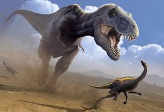
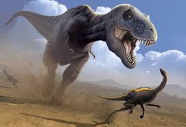

IMAGES OF TRex
 

About TRex
The Tyrannosaurus rex, often abbreviated as T. rex, was a fearsome dinosaur that lived approximately 68 to 66 million years ago during the Late Cretaceous period. It is one of the most famous and iconic dinosaurs known to science. Here are some key facts about T. rex:
Size and Appearance:
T. rex was a large carnivorous dinosaur, with adults reaching lengths of up to 40 feet (12 meters) and standing about 15 feet (4.6 meters) tall at the hips. They weighed around 9 metric tons.
Bipedal Movement:
T. rex was a bipedal dinosaur, meaning it walked on two legs. Its hind limbs were very powerful, allowing it to run at relatively high speeds for a dinosaur of its size.
Tiny Arms:
T. rex had small, seemingly useless arms relative to its overall size. These arms were only about 3 feet (1 meter) long and had two-fingered hands. The function of these arms remains a subject of debate among scientists, but they were likely not used for hunting or grasping prey.
Head and Teeth:
One of the most distinctive features of T. rex was its large skull with massive, serrated teeth. Its teeth were well-suited for crushing bone, and it had one of the most powerful bites of any land animal in history.
Carnivorous Diet:
T. rex was a carnivore, primarily preying on other dinosaurs and potentially scavenging for carrion as well. It likely had an opportunistic feeding strategy, which means it would eat whatever it could catch or find.
Habitat:
T. rex lived in what is now western North America, particularly in regions that are part of present-day Montana, South Dakota, Wyoming, and Alberta, Canada.
Extinction:
T. rex, like all non-avian dinosaurs, went extinct at the end of the Cretaceous period, around 66 million years ago, likely due to a combination of environmental changes, possibly including a large asteroid impact.
Scientific Study:
T. rex has been the subject of extensive scientific research, and our understanding of this dinosaur has evolved over the years. Ongoing discoveries continue to shed light on its biology, behavior, and evolutionary history.
Tyrannosaurus rex is an enduring symbol of the prehistoric world and has captured the imagination of people around the world. Its reputation as a powerful and apex predator makes it a fascinating subject of study for paleontologists and a popular icon in popular culture.